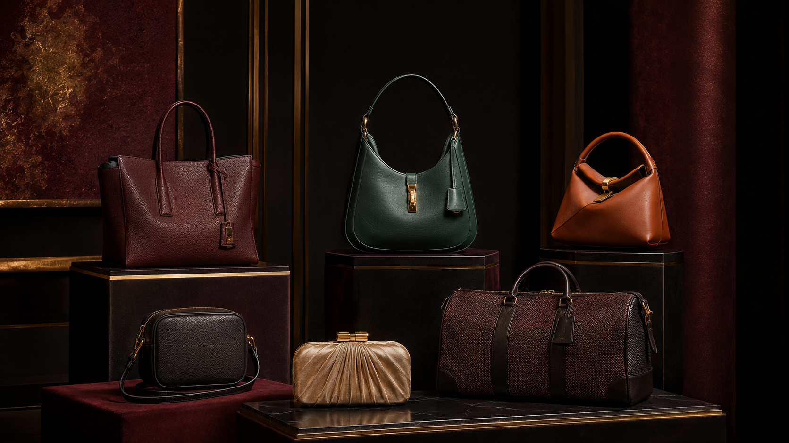

Observe closely
Form, weight, access and finish reveal more together than a logo ever can.
ABOUT THE JOURNAL

Opulent Carry Journal is an independent editorial publication for readers who value design, utility and longevity in equal measure. We translate specialist construction details into clear, practical knowledge.
Our work is not a catalogue of trends. It is a growing record of silhouettes, materials, care rituals and wardrobe decisions that remain relevant after a season ends.
Form, weight, access and finish reveal more together than a logo ever can.
Elegant design should serve movement, comfort and the true contents of a day.
A purposeful collection grows through defined roles, not accumulation.
Small maintenance rituals allow fine materials to age with character.
“The finest carry is not the loudest object in the room. It is the one whose proportions, touch and usefulness keep drawing you back.”
— Editorial principle, Volume 01